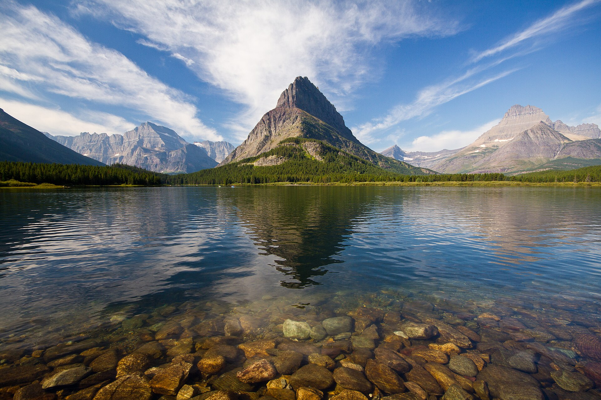
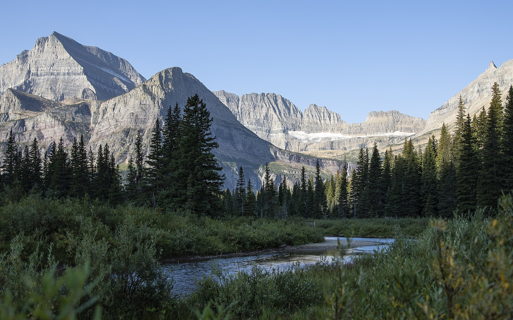
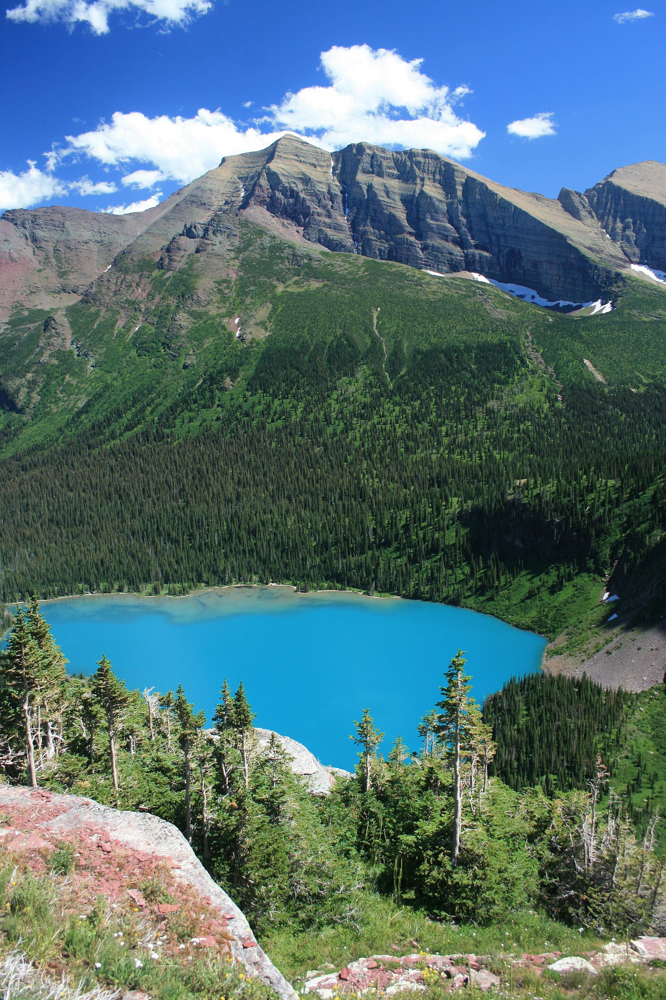
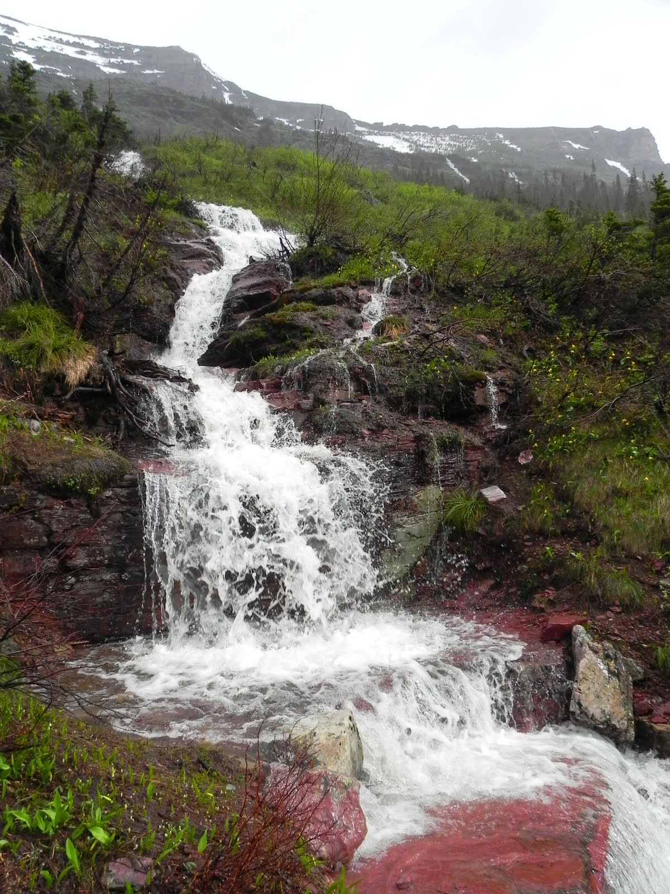
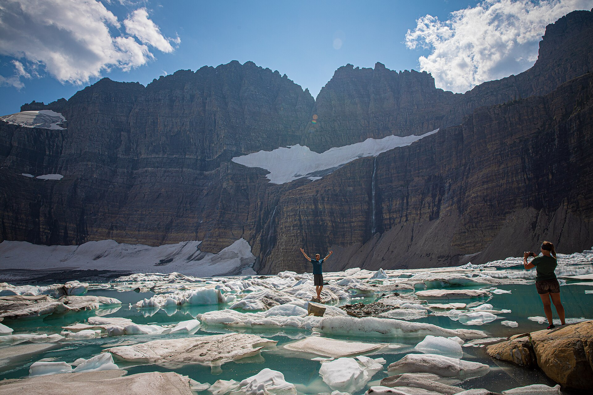
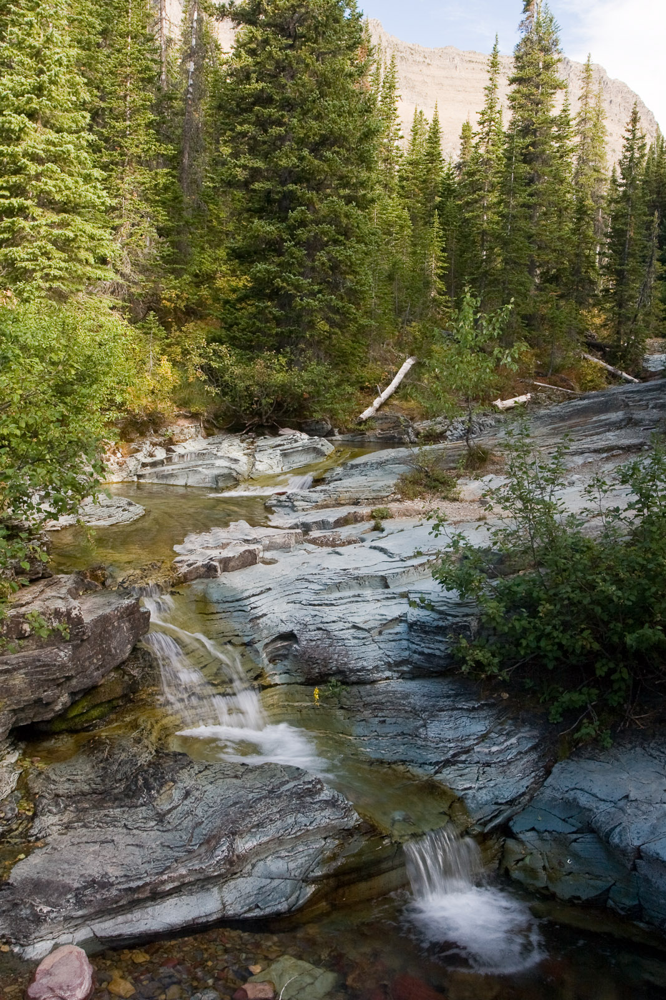
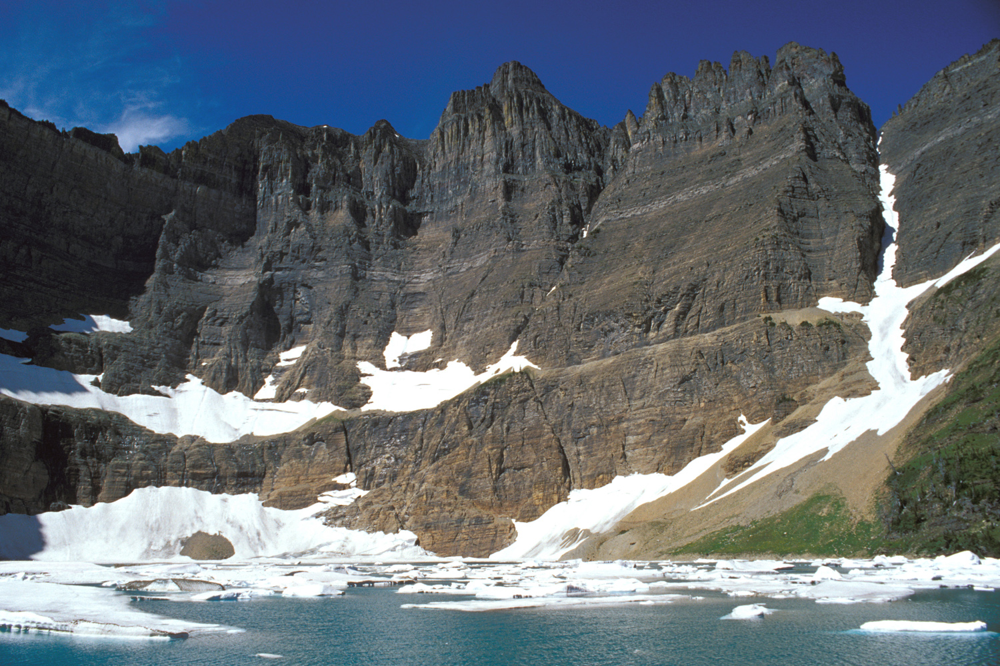
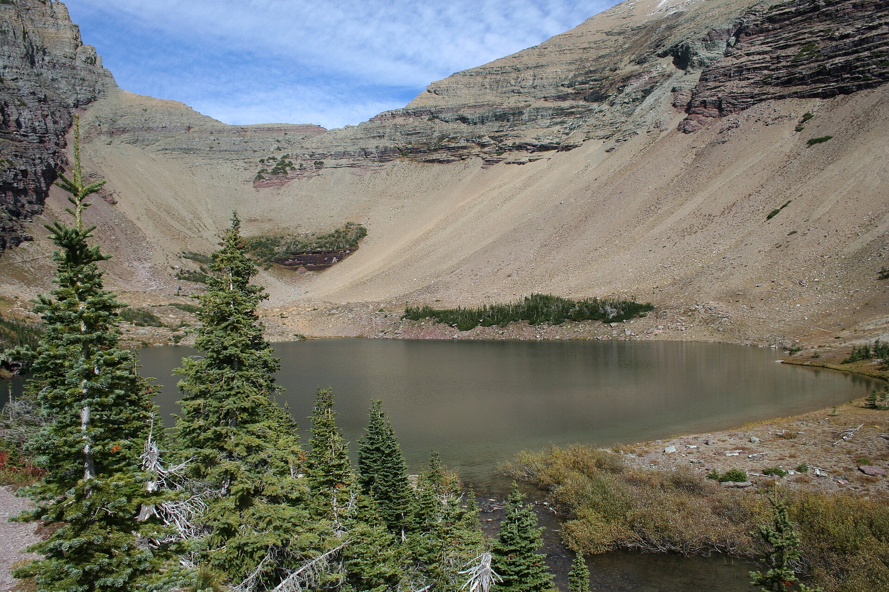
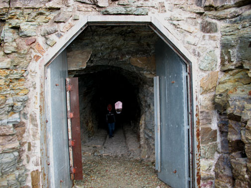

Grinnell Glacier Trailhead高强度
Grinnell Glacier Viewpoint
最丰富的一条：Swiftcurrent 与 Josephine 湖岸、俯瞰 Grinnell Lake、季节瀑布、Upper Grinnell Lake 和冰川近景。
10.0 mi往返 · 16.0 km
+1,581 ft净爬升 · 482 m
6–8 h含正常停留

从湖岸、花海一路走到冰川；或沿同一条山谷，在冰湖与穿山隧道之间做选择。这里把 Grinnell Glacier 与 Iceberg–Ptarmigan 的路线、爬升和每个关键景观一次讲清。
最丰富的一条：Swiftcurrent 与 Josephine 湖岸、俯瞰 Grinnell Lake、季节瀑布、Upper Grinnell Lake 和冰川近景。
先爬到开阔山腰，再穿过森林与野花坡；终点是被近 2,000 英尺岩壁包围的碧蓝冰斗湖。
在 Ptarmigan Falls 后转入支线，经 Ptarmigan Lake 与碎石坡折返，穿过 1930 年凿出的山体隧道看 Belly River。
为什么你会看到两组爬升数字？ NPS 的 2026 GIS 路线页把单程途中所有上坡和下坡分别相加：Grinnell 为上坡 2,596 ft / 下坡 1,015 ft，Iceberg 为上坡 1,765 ft / 下坡 624 ft。上面的“净爬升”是两者相减，约等于传统 NPS Many Glacier 地图所列的 1,600 ft 与 1,200 ft。完整往返时，你仍会把途中下降重新爬回来。
Route 01 · Grinnell Glacier
从 Grinnell Glacier Trailhead 步行全程，NPS 2026 路线数据为单程约 5.0 mi。前约 2.1 mi 大致沿两座湖前进；离开 Lake Josephine 后，路线转为无遮蔽的持续上坡，真正的景观也从这里展开。
沿 Swiftcurrent Lake 西岸与 Lake Josephine 北岸进入山谷，在西端路口转上 Grinnell Glacier Trail；之后高位横切 Grinnell Lake 北侧山坡，通过季节性瀑布与碎石台阶，最后翻上冰碛脊抵达 Upper Grinnell Lake。原路返回最直接。
NPS Grinnell Glacier Trailhead 数据 ↗从 picnic area 附近进入森林，路线贴着湖的西侧前进。路面总体平缓，晨光下最容易看清 Grinnell Point、Mount Wilbur 与水面倒影，也是观察当天云层和风势的第一站。

湖岸仍以森林和平路为主；抵达西端后，boat dock 支线与主路汇合。这里像一道清晰分界线：之前是舒适的湖边步行，之后约 3 mi 才是 Grinnell 的主要爬升。

离开 Lake Josephine 的路口不久，森林逐渐打开，乳蓝色的 Grinnell Lake 会第一次完整出现在脚下。随着高度增加，Lake Josephine 与更远的 Lake Sherburne 也排成一线。

路线贴着山壁横切，春末到盛夏的雪融水可能直接流过步道。部分路段狭窄、外侧落差明显；下山时湿石更滑。不要为拍照走到路线外，也不要在瀑布岩面攀爬。

最后的巨石台阶与冰碛脊是全程最吃力的一段。越过脊线后，Upper Grinnell Lake、Grinnell Glacier 与悬在 Garden Wall 下方的 Salamander Glacier 同时出现。这里不是 Highline Trail 上的 Grinnell Glacier Overlook；你现在是在冰川盆地底部。
照片会随年份和季节呈现完全不同的冰量。湖水接近冰点、岸边冰层不稳定；不要走上浮冰、雪桥或冰川本体。
Route 02 / 03 · Iceberg–Ptarmigan
Trailhead 位于 Swiftcurrent Motor Inn 后方。NPS 官方 Many Glacier 资料把 Ptarmigan Falls 标在单程 2.7 mi；瀑布附近的岔路之后，Iceberg Lake 与 Ptarmigan Tunnel 才成为两条不同路线。
岔路后继续穿过林地和开阔草坡，最后进入被陡峭岩壁包围的冰斗。体感比 Tunnel 温和，但终点常有积雪与湿泥。
岔路后持续上升至 Ptarmigan Lake，再用两段暴露的碎石坡折返爬到隧道。风、日晒和末段爬升更考验体力。

前半段先陡升离开 Swiftcurrent，再以较温和的坡度沿 Mount Wilbur 北侧前进。瀑布藏在林中，主路看到的多是层级水流而非完整正面；这里适合短休，也是判断体力的第一个可靠折返点。

最后进入一座近乎封闭的巨大冰斗，Ahern Peak 与 Iceberg Peak 的岩壁从湖边骤升。湖中是否有“冰山”取决于当年积雪和季节；即使盛夏，终点也可能明显比谷底冷。

从岔路进入 Ptarmigan Creek 山谷后，树林逐渐让位于草甸与碎石。湖面上方已经能看到通往隧道的长折返线；如果天气转差或腿力不足，在湖边结束仍是一条完整而漂亮的 8.6 mi 往返路线。

从湖边再爬约 1 mi 的暴露碎石坡，抵达 1930 年凿穿 Ptarmigan Wall 的历史隧道。穿过约 250 ft 的黑暗通道，北侧会突然打开到 Belly River、Elizabeth Lake 与远处加拿大方向的视野。
Choose your day
三条都值得走，但不是同一种体验。Grinnell 胜在一路不断变化；Iceberg Lake 用相对温和的代价换一个震撼终点；Ptarmigan Tunnel 则把体力花在高山历史工程和隧道另一侧的反差上。
优先 Grinnell Glacier。它把 Many Glacier 最有代表性的湖泊、瀑布、岩层、野生动物栖息地与冰川盆地串在同一天里。
选 Iceberg Lake。净爬升低于另外两条，终点的巨大岩壁尺度感很强；如果更喜欢高处视野、历史结构并且体能充足，就改选 Ptarmigan Tunnel。
Before you leave
Many Glacier 是真正的熊区和高山环境。热门步道并不等于没有风险：野生动物、积雪、落石、冷水与午后雷暴都可能临时改变计划。
步道会因熊活动、积雪、桥梁受损或火情临时关闭。截图 NPS 状态与地图，因为山谷内信号不可靠。
结伴、定期出声，不戴耳机。熊喷应在腰间或胸前而不是包底，并在出发前学会正确使用。
冰川湖和溪流全年极冷。不要踩浮冰、雪桥或瀑布旁湿滑岩面；拍照也不要离开正式步道。
带足水、餐食、防晒、保暖层与雨具。上半程树荫有限，终点又可能因风和云层迅速降温。
Sources & method
距离与爬升优先采用 NPS 当前路线页和 Many Glacier 官方日间徒步资料。观景点里程为沿主线的近似位置，用来建立节奏感，不替代现场路牌、正式地形图或当天关闭通知。时间按一般日间徒步速度并加入短暂停留估算；天气、拥堵、拍照与个人体能都会明显改变结果。
资料核对：2026-08-26